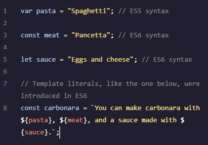
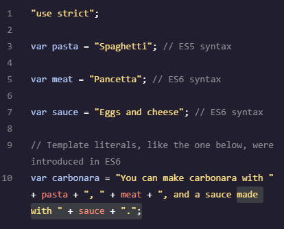
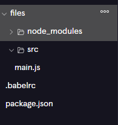

Conversion JS de ES6 a ES5 - Transpilado
Transpilación con Babel
Transpilar manualmente el código ES6 a ES5 es posible, aunque la conversión manual sólo te lleves unos minutos, es insostenible a medida que aumenta el tamaño del archivo JavaScript.
Dado que ES6 es previsiblemente compatible con versiones anteriores, un grupo de programadores de JavaScript ha desarrollado una biblioteca de JavaScript llamada Babel que transpila JavaScript ES6 a ES5.
La transpilación es el proceso de convertir un lenguaje de programación a otro.
Los siguientes comandos sirve para utilizar Babel y transpilar la nueva versión de JavaScript (ES6), fácil de escribir, a la antigua versión de JavaScript (ES5), compatible con el navegador.
En las siguientes instrucciones, pasarás el código de JavaScript ES6 a Babel, que lo transpilará a ES5 y lo escribirá en un archivo en el directorio lib.
Esto instala uno de los dos paquetes Babel necesarios.
npm install babel-cli
Esto instala el segundo de los dos paquetes Babel necesarios.
npm install babel-preset-env
Puedes ver el código ES5 en ./lib/main.js.
npm run build
Es posible que tengas que actualizar para ver el directorio lib recién creado.
Resultado del proceso de transpilado de ES6 a ES5:
|  |  |
Recuerda que si a los comandos anteriores les añades -D, indica a npm que añada cada paquete a una propiedad llamada devDependencies en package.json. Una vez que las dependencias del proyecto están listadas en devDependencies, otros desarrolladores pueden ejecutar su proyecto sin instalar cada paquete por separado. En su lugar, pueden simplemente ejecutar npm install - que indica a npm que busque dentro de package.json y descargue todos los paquetes listados en devDependencies.
Transpilado a una versión específica
Por defecto, como se ha comprobado antes, se transpila a ES5, pero si queremos hacerlo a cualquier otra versión de ECMAScript, tenemos que crear en la raiz del proyecto el fichero .babelrc .
touch .babelrc
Dentro de .babelrc necesita definir el preajuste para su archivo JavaScript inicial. El preajuste especifica la versión de su archivo JavaScript inicial.
Para especificar que estamos transpilando código desde una fuente ES6+, tenemos que añadir el siguiente objeto JavaScript en .babelrc:
{
"presets": ["env"]
}
Cuando se ejecuta Babel, busca en .babelrc para determinar la versión del archivo JavaScript inicial. En este caso, [“env”] indica a Babel que transpile cualquier código de las versiones ES6 y posteriores.

Hay un último paso antes de poder transpilar nuestro código. Necesitamos especificar un script en package.json que inicie la transpilación de ES6+ a ES5.
Dentro del archivo package.json, hay una propiedad llamada scripts así:
"scripts": {
"test": "echo \"Error: no test specified\" && exit 1"
},
Añadimos la última línea de build :
"scripts": {
"test": "echo \"Error: no test specified\" && exit 1"
"build": "babel src -d lib"
},
Así especificamos que se transpile a ES5.
npm run build